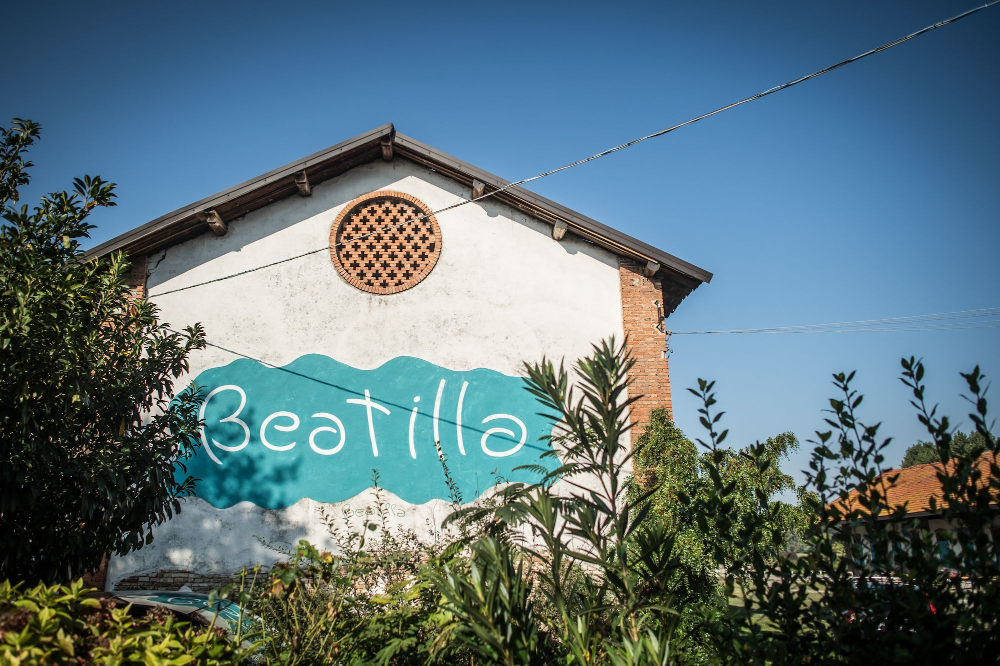
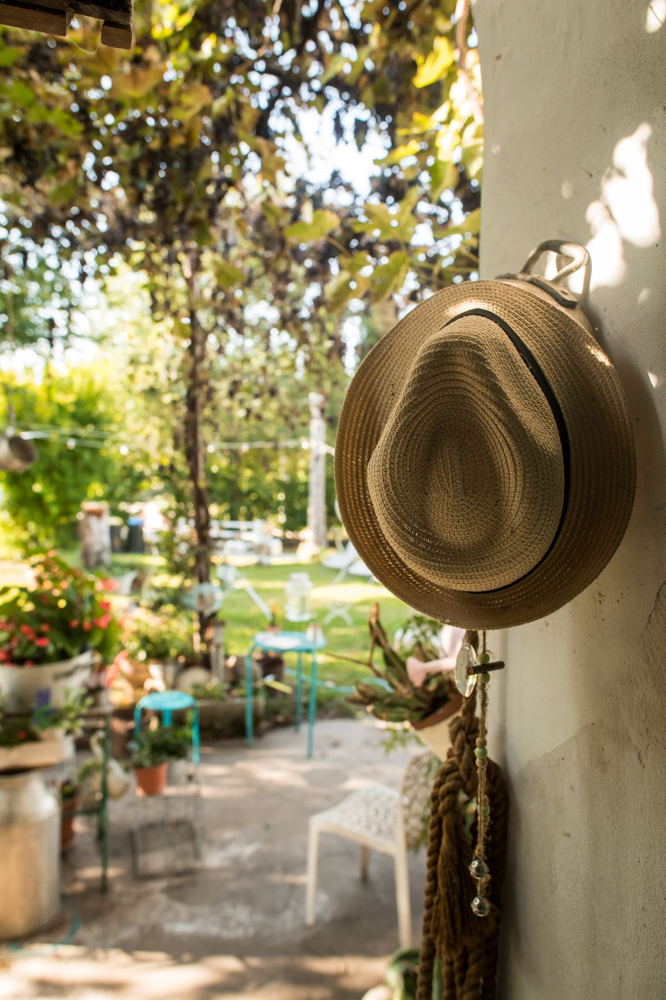
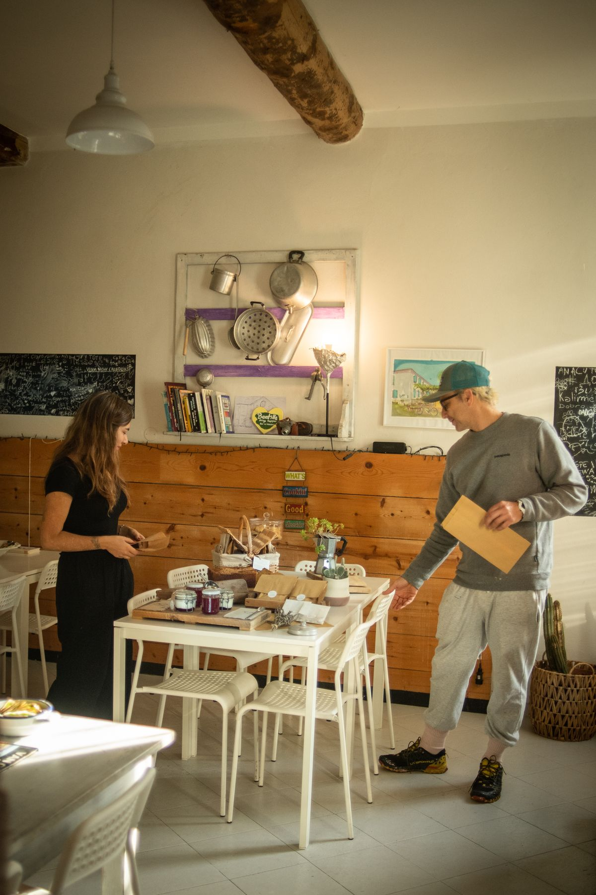
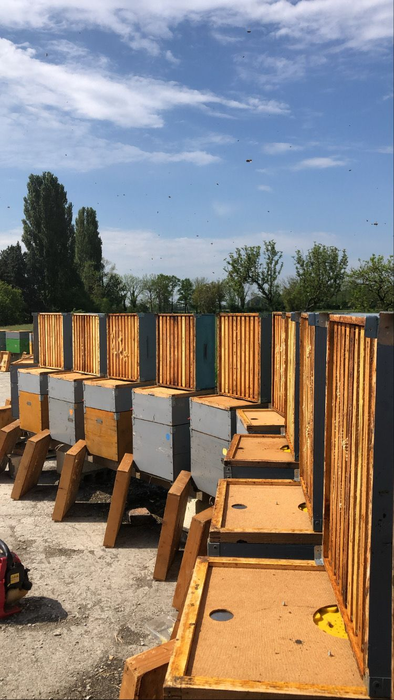
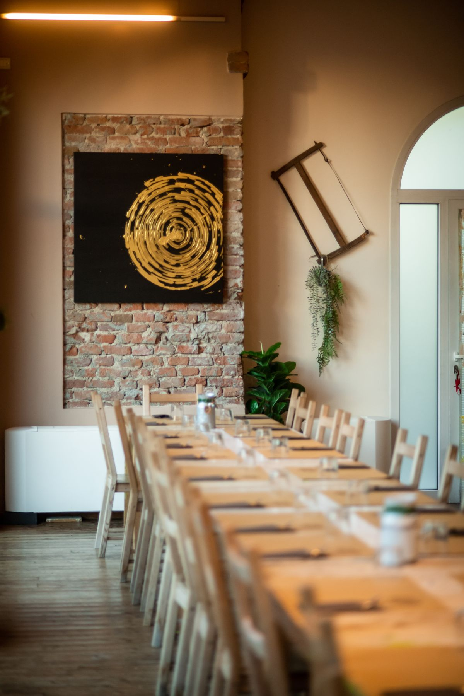
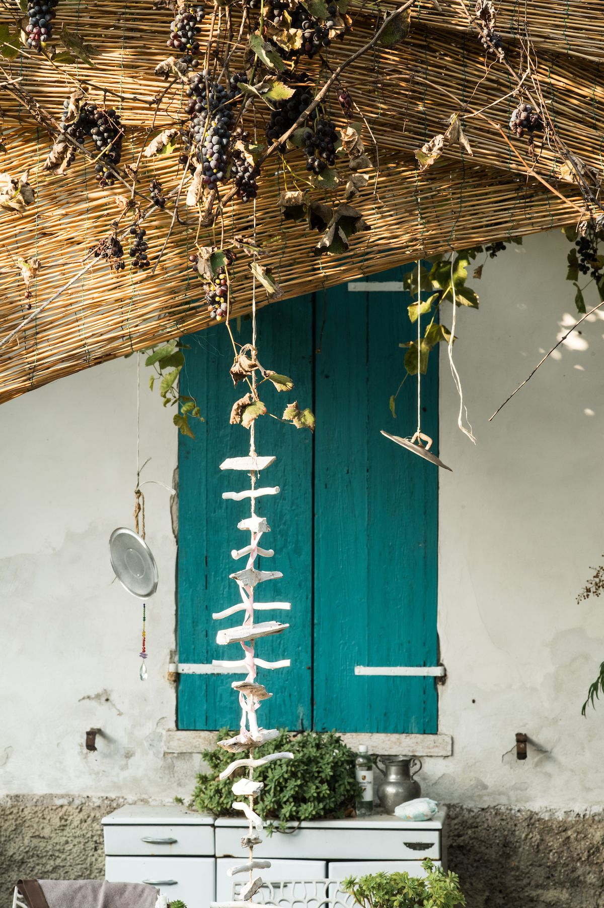
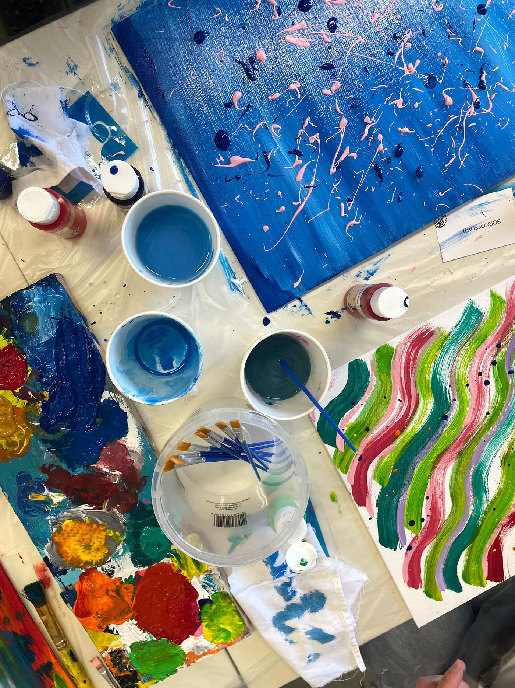
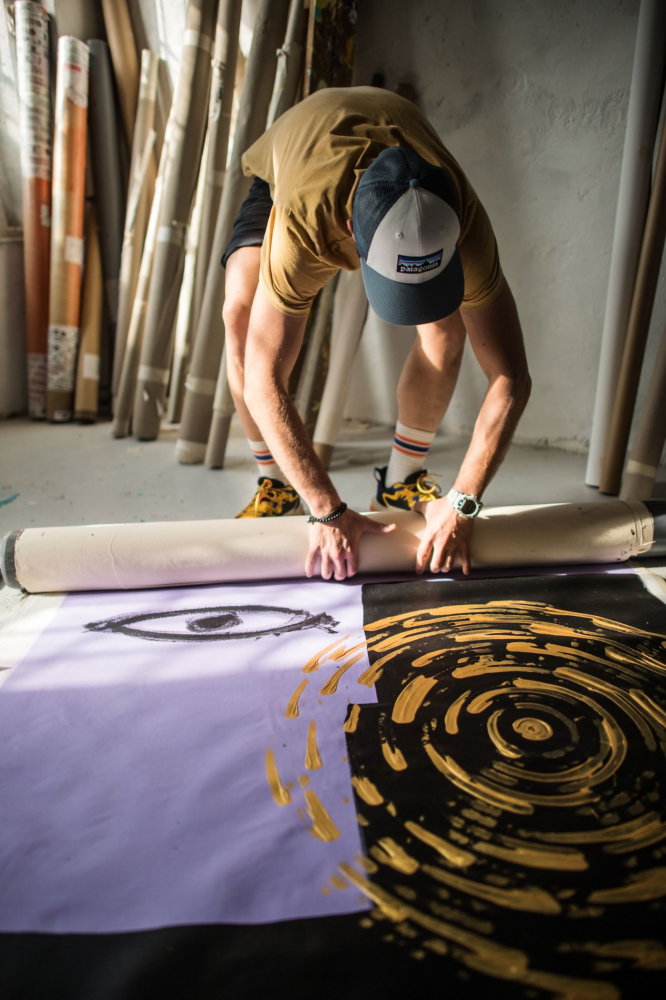
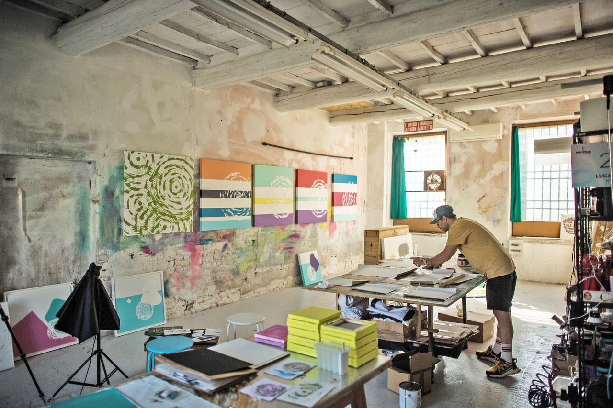
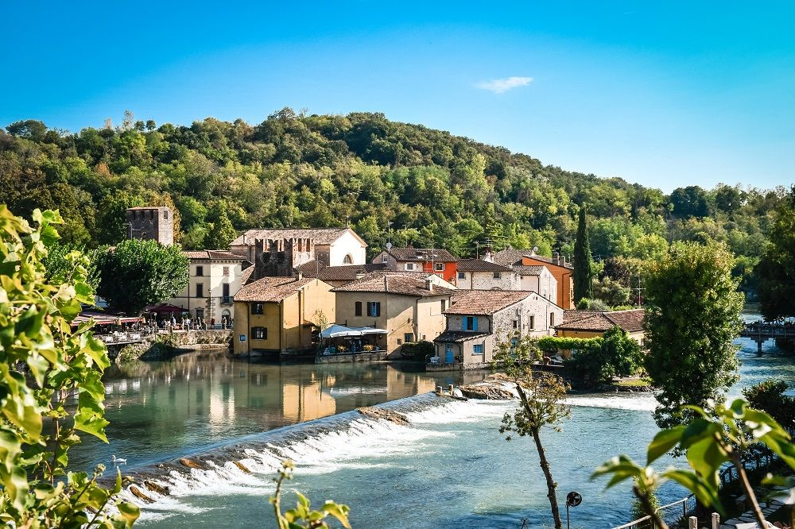

01
Camera Pomodoro
Calda, vivace e accogliente: le tonalità del rosso, gli arredi dipinti a mano e le opere d'arte contemporanea creano un ambiente ricco di energia e personalità.
Scopri →Mantova · Dal 1498
Chi siamo
Alle porte di Mantova, accanto allo storico Bosco della Fontana e immerso nel Parco del Mincio, Beatilla è un luogo dove arte, natura ed eco-design si incontrano.
Più di un agriturismo, è uno spazio pensato per chi desidera rallentare, respirare e vivere la campagna in modo autentico.
Ogni ambiente nasce dall'incontro tra materiali naturali, recupero creativo, colori e dettagli realizzati a mano. Un progetto ideato dall'artista internazionale ed eco-designer Luca Bornoffi, che dalle sue collaborazioni con hotel di lusso in tutto il mondo ha portato qui il suo concept di ospitalità, riscoprendo lo stile «homemade» — uno degli agriturismi più eco sostenibili del territorio.
Beatilla offre appartamenti e camere immersi nel verde, progettati per accogliere coppie, famiglie e viaggiatori in cerca di tranquillità. A pochi minuti da Mantova e collegata alla pista ciclabile Mantova–Peschiera, la nostra cascina è il punto di partenza ideale per scoprire il territorio o semplicemente concedersi una pausa.

Il nostro motto
«Mi casa es tu casa»
Un incontro di colori dove arte, natura, eco-design, riciclo e accoglienza sono i protagonisti della nostra storia. La nostra missione è farvi sentire a casa e regalarvi un sorriso.
Soggiornare
Calda, vivace e accogliente: le tonalità del rosso, gli arredi dipinti a mano e le opere d'arte contemporanea creano un ambiente ricco di energia e personalità.
Scopri →
Luce, semplicità e armonia: uno spazio luminoso dove il design incontra la quiete della campagna, tra travi a vista, dettagli artigianali e colori ispirati agli agrumi.
Scopri →
Più spazio per sentirsi a casa: un appartamento indipendente con soggiorno, cucina e camera da letto, dove arte e design accompagnano ogni momento del soggiorno.
Scopri →
Il volto più contemporaneo di Beatilla: colori audaci, ambienti luminosi e opere di Luca Bornoffi trasformano questo appartamento in una vera esperienza tra arte ed eco-design.
Scopri →
L'anima più autentica della cascina: pietra, legno e soffitti con travi a vista raccontano la tradizione rurale, reinterpretata con lo stile artistico che caratterizza Beatilla.
Scopri →Ogni camera e appartamento di Beatilla ha una propria identità e un proprio nome. La sistemazione verrà assegnata in base alla disponibilità, garantendo sempre la tipologia e i servizi prenotati.
Frammenti




Da vivere




Comfort & ospitalità
Tutto ciò che rende il soggiorno semplice e sereno: Una colazione che vi aspetta alla porta, una passeggiata nella natura o un giro in bicicletta, pensiamo a ogni dettaglio perché possiate sentirvi a casa.
Un cestino di prodotti fatti in casa, preparato con cura vi aspetta direttamente alla porta del vostro alloggio all'orario desiderato.
Macchina del caffè in camera per una pausa profumata in qualsiasi momento della giornata.
Soluzioni per 2-4 persone con cucina attrezzata per cucinare, ideali per famiglie e soggiorni prolungati.
Pedalate lungo la ciclabile Mantova-Peschiera, a soli 15 minuti dal Parco del Mincio.
Negli alloggi e nella nostra reception, troverete diversi tipi di bevande, per fare una merenda o un aperitivo in giardino.
Un ampio spazio verde dove rilassarsi, giocare in famiglia e vivere la natura.
Parcheggio scoperto gratuito all'interno della struttura. Parcheggio coperto disponibile su richiesta a pagamento.
Connessione veloce e gratuita in tutta la struttura, per restare in contatto o lavorare in vacanza.
Culle e lettini disponibili su richiesta, per il riposo sereno dei più piccoli.
Uno spazio raccolto dove leggere, rilassarsi e lasciarsi ispirare dall'arte che vi circonda.
Itinerari in barca lungo il Mincio per scoprire la natura e i borghi d'acqua del territorio.
A pochi minuti uno dei percorsi cicloturistici più belli d'Italia, lungo il fiume fino al Garda.
Il lago più grande d'Italia a soli 30 minuti: spiagge, borghi e panorami indimenticabili.
Passeggiate tra i sentieri del Bosco della Fontana, nel cuore di una delle riserve naturali più suggestive del territorio.
Scoprite la vita dell'agriturismo tra orti, animali e i ritmi autentici della campagna.
Passeggiate a cavallo organizzate in collaborazione con un maneggio nelle vicinanze.
Vi aiutiamo a scoprire il territorio, consigliandovi ristoranti, luoghi da visitare ed esperienze da non perdere.
Sessioni nel verde per ritrovare equilibrio e armonia immersi nella quiete della natura. Su richiesta.
Esperienza d'arte
Dopo aver scoperto il percorso artistico dell'artista internazionale Luca Bornoffi e la filosofia della sua serie Circles of Life, vivrete un'esperienza immersiva tra tele, colori e materiali, creando un'opera unica che porterete con voi.
Il workshop è aperto a tutti, anche a chi non ha mai dipinto. Più che imparare una tecnica, vivrete il piacere di esprimervi liberamente in un luogo dove arte e natura dialogano ogni giorno.
Tutto il materiale è incluso. Disponibile su prenotazione.
Prenota la tua esperienza →Per richiedere maggiori informazioni, contattateci: info@agriturismobeatilla.it


More than an artist residency. A place to create, share and belong.
Beatilla Art Residency nasce per offrire ad artisti e professionisti creativi il tempo, lo spazio e la tranquillità necessari per sviluppare la propria ricerca artistica. Immersa nella campagna mantovana, è un luogo dove arte, natura ed eco-design convivono ogni giorno, trasformando la quotidianità in fonte d'ispirazione.
Accogliamo artisti di ogni disciplina, favorendo sia il lavoro individuale sia lo scambio culturale attraverso esperienze condivise, ospitalità e vita rurale.
Per candidature e informazioni: info@agriturismobeatilla.it
L'artista
«Spesso dimentichiamo da dove vengono i colori.»
Luca Bornoffi (Mantova, 1980) è un artista contemporaneo la cui ricerca nasce da un profondo legame con la natura. Cresciuto in campagna, tra cavalli e paesaggi rurali, ha sviluppato una sensibilità particolare per il colore, inteso come fonte di armonia, energia e benessere.
La sua pratica artistica prende forma nella serie Circles of Life: composizioni astratte di cerchi, trasparenze e colori che evocano connessioni, incontri e l'imperfetto ritmo della vita. Per Bornoffi il colore non è soltanto un elemento visivo, ma un linguaggio capace di trasformare la percezione degli spazi e delle emozioni.
Dopo aver viaggiato in oltre 60 Paesi, ha dato vita a Beatilla Holiday Farm Eco Design, un luogo interamente decorato con le sue opere e arredato con mobili di recupero. Le sue opere fanno parte di collezioni ed esposizioni in tutto il mondo e sono presenti su Artsy, Artnet e Artsper.
Scopri il suo lavoro →
Ospiti
Il territorio
Mantova, Città Patrimonio dell'Umanità UNESCO e Capitale Italiana della Cultura 2016, è una delle città più belle d'Italia: palazzi, musei, chiese e piazze raccontano secoli di arte e storia gonzaghesca. Da non perdere i celebri tortelli di zucca e la storica torta sbrisolona, autentiche eccellenze della tradizione gastronomica mantovana.
Il Palazzo Ducale con la Camera degli Sposi del Mantegna, Palazzo Te, Piazza delle Erbe, la Rotonda di San Lorenzo e la Basilica di Sant'Andrea: un museo a cielo aperto.

La più grande foresta della Pianura Padana, con il castello cinquecentesco riserva di caccia dei Gonzaga. Ci si arriva direttamente a piedi dall'agriturismo.

Raggiungibile anche in bicicletta da Beatilla. Uno dei borghi più belli d'Italia, tra mulini ad acqua, vicoli storici e scorci sul fiume Mincio.

La città di Romeo e Giulietta, Patrimonio UNESCO, tra l'Arena, piazze eleganti e un centro storico ricco di fascino.

Raggiungibile anche in bicicletta da Beatilla. Città fortificata Patrimonio UNESCO, dove canali, bastioni veneziani e il Lago di Garda si incontrano.
La perla del Lago di Garda, con il Castello Scaligero, le Grotte di Catullo e le sue rinomate terme.
A pochi minuti anche le Colline Moreniche con i loro vigneti, il Parco Giardino Sigurtà, uno dei giardini più belli d'Europa, e Gardaland per i più piccoli.
Contatti
Come raggiungerci
Dall'autostrada A22 (Modena–Brennero)
Uscita Mantova Nord, seguite la direzione Brescia. Dopo circa 8 km, alla rotonda proseguite per Brescia; dopo 500 m svoltate a sinistra verso Bosco Fontana e prendete la prima a destra dopo 200 m.
Da Mantova
Direzione Brescia. A Cittadella svoltate a sinistra per Brescia – Lago di Garda; dopo circa 3 km, alla rotonda proseguite dritto per Brescia. Dopo 500 m a sinistra verso Bosco Fontana, poi la prima a destra dopo 200 m.
Da Brescia
Percorrete la SS Goitese in direzione Mantova: dopo Montichiari, Castiglione delle Stiviere e Goito, superate Marmirolo. Dopo circa 3 km svoltate a destra verso Bosco Fontana e prendete la prima a destra dopo 200 m.
Suggerimento: impostate il navigatore satellitare su “Corte Barco”.
Domande frequenti
Il check-in è disponibile dalle 15:00, mentre il check-out è entro le 10:00. Per garantirvi un alloggio preparato con la massima cura, vi chiediamo gentilmente di rispettare l'orario di arrivo.
Sì. Ogni mattina vi consegneremo la nostra Breakfast Basket, un cestino preparato con prodotti freschi fatti in casa consegnata direttamente in camera all'orario desiderato dalle 7:30 alle 9:45.
Sì. È disponibile un parcheggio scoperto gratuito all'interno della struttura. Su richiesta è disponibile anche un parcheggio coperto a pagamento.
Sì. Il ristorante sarà felice di accogliere anche gli ospiti esterni, su prenotazione. Per prenotazioni: +39 339 222 6468
Assolutamente sì. Disponiamo di lettini per i più piccoli, ampi spazi all'aperto e un grande giardino dove trascorrere momenti di relax in famiglia.
No, al momento non è possibile ospitare animali domestici.
Sì. Mettiamo a disposizione biciclette su prenotazione, ideali per esplorare il Bosco della Fontana, Mantova, Borghetto sul Mincio e la ciclabile fino al Lago di Garda.
Beatilla si trova a Marmirolo, nel cuore della campagna mantovana, a pochi minuti dal centro storico di Mantova e dal Bosco della Fontana. È una posizione ideale per visitare il territorio tra Mantova, il Lago di Garda e le colline moreniche.
Sì. Tutti gli appartamenti sono dotati di cucina attrezzata con stoviglie ed elettrodomestici.
Sì, il Wi-Fi è gratuito e disponibile in tutta la struttura.
Sì. Organizziamo Workshop d'arte, visite alla fattoria, escursioni, noleggio biciclette e altre esperienze su prenotazione.
Avete ancora qualche domanda? Contattateci, saremo lieti di aiutarvi.
+39 347 844 4484 →